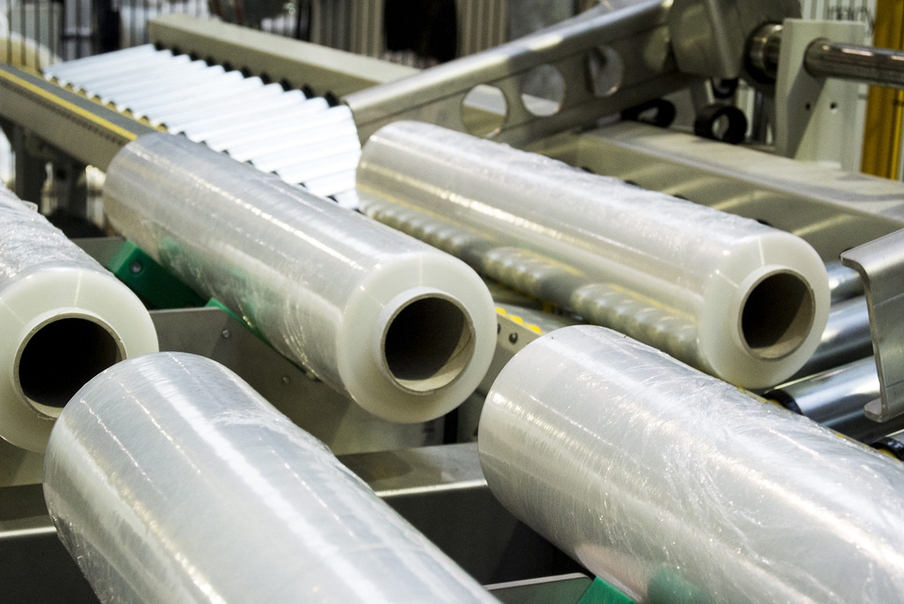
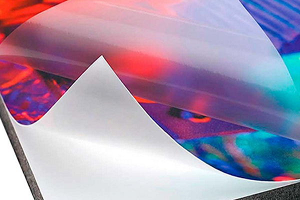

Druka
Iepakojumu var papildināt ar logo, reklāmas tekstu, produkta informāciju un vizuālo identitāti.
Tehnoloģija
Mūsu iekārtas ļauj izmantot vairākus kausēto salaidumu veidus, tostarp ultraskaņas sakausēšanu, kā arī apdruku, lamināciju un griešanu.
Iepakojumu var papildināt ar logo, reklāmas tekstu, produkta informāciju un vizuālo identitāti.
Piedāvājam divslāņu un trīsslāņu laminētās plēves ar plašu materiālu kombināciju izvēli.
Materiāls tiek sagatavots konkrētam iepakojuma izmēram un ražošanas specifikācijai.
Ražojam iepakojumus ar falcēšanu, līmlenti, rokturiem, klapītēm un tehnoloģiskiem caurumiem.

Izejvielas
Ražošanā izmantojam BOPP, CPP, LDPE, HDPE, PA/PE, PET/PE, Mono PP, papīru un foliju. Materiāls tiek izvēlēts pēc produkta īpašībām, barjeras prasībām, iepakošanas procesa un pārdošanas vides.
Kvalitāte
Polipropilēna plēve tiek ražota saskaņā ar tehniskajiem noteikumiem un ir piemērota lietošanai saskarē ar pārtikas produktiem. Katram pasūtījumam precizējam praktiskās prasības: produkta īpašības, iepakošanas veidu, glabāšanu un pārdošanas vidi.
